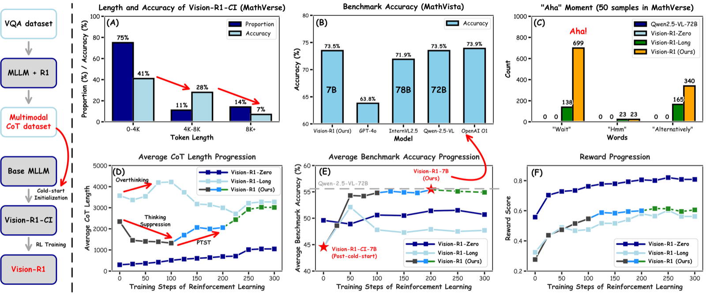
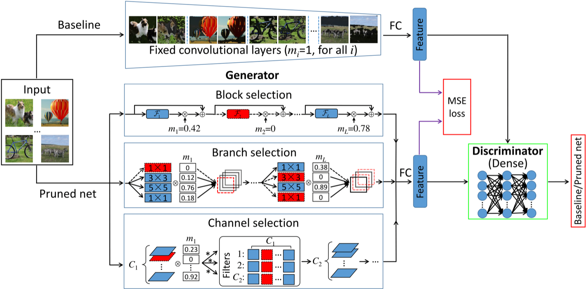
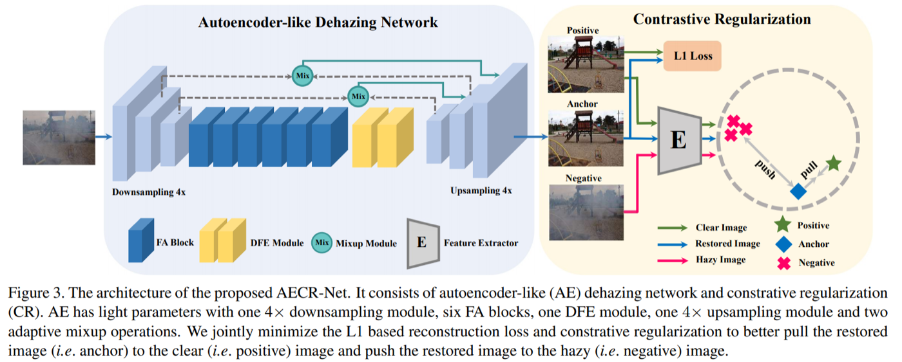

Large Model Compression & Acceleration
Pruning, quantization, distillation, sparsity, low-rank adaptation, and deployment-aware acceleration for foundation models and vision backbones.
Open-source research for efficient AI systems
We build compact, fast, and capable AI systems across large model compression, image restoration and generation, intelligent agents, and AI4Science.
Research directions
Pruning, quantization, distillation, sparsity, low-rank adaptation, and deployment-aware acceleration for foundation models and vision backbones.
Compact networks for super-resolution, dehazing, enhancement, denoising, restoration, and controllable generation under real compute budgets.
Multimodal reasoning, tool use, planning, and evaluation pipelines that make agents more reliable, inspectable, and efficient.
Efficient learning systems for scientific data, simulation surrogates, discovery workflows, and domain models where accuracy and compute both matter.
Open source

A multimodal reasoning project focused on incentivizing reasoning capabilities in vision-language models.
RepositoryExploiting kernel sparsity and entropy for interpretable CNN compression, accepted by CVPR 2019.
Repository
Structured neural network pruning for compact and deployable convolutional models.
RepositoryAccelerating convolutional networks through global and dynamic filter pruning, from IJCAI 2018.
RepositoryHolistic CNN compression via low-rank decomposition with knowledge transfer, published in TPAMI.
RepositoryStructure-sparsity regularized filter pruning for compact ConvNets, published in TNNLS.
Repository
Contrastive learning for compact single image dehazing, connected to the low-level vision direction on Shaohui Lin's publication list.
RepositoryWorking style
EIC Lab emphasizes reproducible code, practical acceleration, and systems that can be tested beyond benchmark tables. The site is structured so new papers, datasets, demos, and leaderboards can be added as the lab grows.
People
 SL
SL
Research interests include model compression and acceleration, efficient image restoration, generation, and multimodal intelligent systems.
Add member cards here with research topics, personal pages, and selected publications.
Join us
We welcome students and collaborators interested in efficient foundation models, low-level vision, agents, and scientific AI.